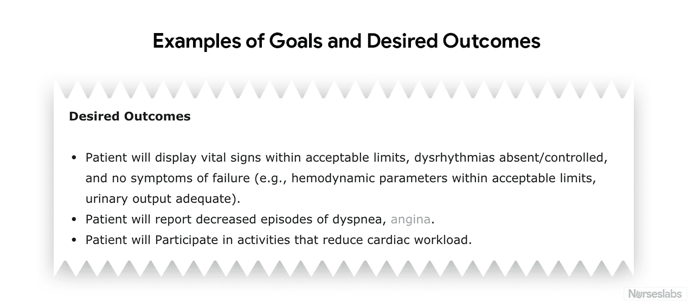
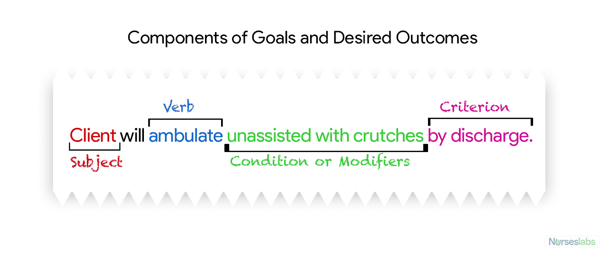

Write and Learn
Intro Text
In health settings, both the clients and nurses establish goals for each determined priority. This will give them direction and help them evaluate their progress giving them a sense of achievement. Goals are constructed by focusing on problem prevention, resolution, and rehabilitation.
Goals can be for short or long term periods. Most goals are short-term since much of the nurse's time is spent on the client's immediate needs. Long-term goals are often used for clients who have chronic health problems or who live at home. Read the examples of goals and desired outcomes below, notice how they are written, its structure and take into account the steps given to develop the tasks.
See tab "structure of goals"
Structure of goals

Figure 1
Structure of Goals and Desired Outcomes
Goals usually have 4 components as in the image below:

Figure 2.
Tips to write goals
- Write goals and outcomes in terms of client responses. Begin each goal with “Client will […]” help focus the goal on client behavior and responses.
- Use observable, measurable terms for outcomes. Avoid using vague words that require interpretation or judgment of the observer.
- Desired outcomes should be realistic for the client’s resources, capabilities and limitations.
- Ensure that each goal is derived from only one nursing diagnosis. Keeping it this way facilitates evaluation of care by ensuring that planned nursing interventions are clearly related to the diagnosis set.
- Lastly, make sure that the client considers the goals important and values them to ensure cooperation.
Adapted from: Nurseslabs.com